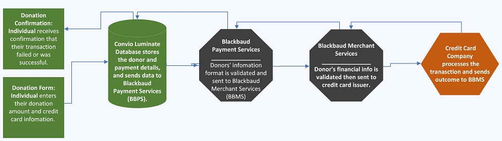

Heart and Stroke Foundation: Program Technical Support
It All Began When...
- Blackbaud's data center that hosts the Heart and Stroke Foundation's fundraising websites and CRM database experienced a platform wide week-long payment processing connectivity problem during two of the Foundation's signature fundraising events - Ride for Heart and Big Bike.
- Connections between the payment processing services and the CRM database were periodically dropped throughout the payment pipeline, resulting in payment details not being fully recorded within each service, at each stage in the process.
- Challenge: There were successful donations processed where the CRM database didn't receive confirmation, and donors didn’t know whether their donation went through. There were also failed donations and donors didn't know the result, and several people made multiple donation attempts.

Solution
We created a list of all funds received in our merchant accounts, and combined our custom System Error and Declined Transactions reports to create a list of affected transactions, and I separated tasks amongst the Support team to verify and document all affected donors and their transction issue details.
Results
We contacted all (over 600) affected donors to let them know we had experienced system issues and provided details on their problem:
Asked donors whose payment didn’t go through to retry their donation, and almost all did.
Confirmed if donors meant to give multiple donations, and refunded those who didn’t.
We manually created donation records and tax receipts for individuals whose donation was successful but not recorded in the CRM.
Provided Finance and the Program teams daily progress reports and a list of all donations and refunds we processed.
We recouped approximately $70,000 in donations that weren't originally processed, were credited over $200 in transaction fees, and most importantly we made sure that donors were aware of what happened with their donation as soon as possible.